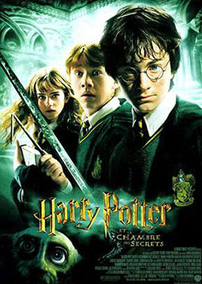

哈利波特2: 密室 (Harry Potter and the Chamber of Secrets)
作者：J.K.罗琳 (Joanne Kathleen Rowling) [英国]
在霍格沃茨魔法学校学习一年之后，暑假开始了。哈利·波特在姨父姨妈家熬过痛苦的假期。正当他准备打点行装去学校时，家养小精灵多比前来发出警告：如果哈利返回霍格沃茨，灾难将会临头。多比为哈利重返霍格沃茨设置了很多障碍，但哈利和罗恩还是开着韦斯莱先生会飞的福特老爷车，义无反顾地回到了霍格沃茨。
难度：
大学
长度：
长篇
分类：
魔幻
第一章: 最糟糕的生日 The Worst Birthday
第二章: 多比的警告 Dobby's Warning
第三章: 陋居 The Burrow
第四章: 在丽痕书店 At Flourish and Blotts
第五章: 打人柳 The Whomping Willow
第六章: 吉德罗·洛哈特 Gilderoy Lockhart
第七章: 泥巴种和细语 Mudblood and Whisper
第八章: 忌辰晚会 The Deathday Party
第九章: 墙上的字 The Writting on the Wall
第十章: 失控的游走球 The Rogue Bludger
第十一章: 决斗俱乐部 The Dueling Club
第十二章: 复方汤剂 The Polyjuice Potion
第十三章: 绝密日记 The Secret Diary
第十四章: 康奈利·福吉 Cornelius Fudge
第十五章: 阿拉戈克 Aragog
第十六章: 密室 The Chamber of Secrets
第十七章: 斯莱特林的继承人 The Heir of Slytherin
第十八章: 多比的报偿 Dobby’s Reward